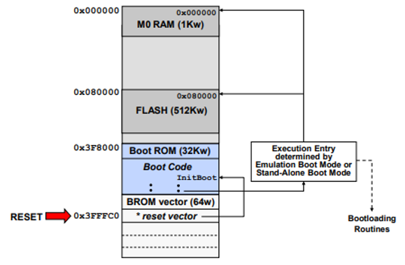

Reset and Boot Process#
C2000 devices have various reset sources. Refer to the ‘Reset Causes and Handling’ section within the Technical Reference Manual for a full list of possible reset sources. Below is a description of the most common reset sources:
•Power-on Reset (POR)- The POR circuit is used to create a clean reset throughout the device during power-up, while suppressing glitches on the input/output pins.
•XRS (External Reset Pin)- XRS is the main chip-level reset for the device, and it resets the device to the default state (for devices with multiple CPU subsystems, each CPU subsystem gets reset).
•Watchdog Timer Reset- The watchdog will trigger a reset and pull the XRS pin low
Note:
For dual/multi core devices, resets on CPU1 will reset the entire device and resets on the other core/s will reset only that sub-subsystem.
A reset cause register (RESC) is available (for devices with multi-code subsystems, each core has one register) which can be read to determine the cause of the reset.
Dual-Core Boot Process#
The below procedure is for the F2837XD Device:
CPU1 starts execution from CPU1 boot ROM while CPU2 is held in reset
CPU1 controls the boot process
CPU2 goes through its own boot process under the control of CPU1-except when CPU2 is set to boot-to-flash
IPC registers are used to communicate between CPU1 and CPU2 during the boot process
The below procedure is for the F2838xD Device:
CPU1 starts execution from CPU1 boot ROM while CPU2/CM are held in reset
CPU1 controls the boot process
CPU2/CM go through their own boot process under the control of CPU1
IPC registers are used to communicate between CPU1, CPU2, and CM during the boot process
Boot Sequence#
When the MCU is powered-on, and each time the MCU is reset, the internal bootloader software located in the boot ROM is executed. The boot ROM contains bootloading routines and execution entry points into specific on-chip memory blocks. This initial software program is used to load an application to the device RAM through the various bootable peripherals, or it can be configured to start an application located in flash.
Enhanced Boot Modes#
Note:
This section is only applicable to the F2838x, F28004x, F28002x, F280013x, and F280015x family of devices
The enhanced boot modes provide the ability to move, reduce or eliminate boot mode select pins by programming the BOOTPIN_CONFIG register.
BOOTPIN-CONFIG register selects boot pins to be used:
Emulation Boot Mode:
EMU-BOOTPIN-CONFIG register - F28004x / F28002x / F280015x
EMUBOOTPIN-CONFIG register - F2838x
Stand-Alone Boot Mode:
Z1-OTP-BOOTPIN-CONFIG register - F28004x / F28002x / F280015x
Z1-BOOTPINCONFIG/ Z2-BOOTPINCONFIG register - F2838x
BOOTDEF register determines boot mode option and assignment of peripheral GPIO pins or flash/RAM entry point
Emulation Boot Mode:
EMU-BOOTDEF-LOW/HIGH register - F28004x / F28002x / F280015x
EMUBOOTDEF-LOW/HIGH register - F2838x
Stand-Alone Boot Mode:
Z1-OTP-BOOTDEF-LOW/HIGH register - F28004x / F28002x / F280015x
Z1-BOOTDEF-LOW/HIGH register/ Z2-BOOTDEF-LOW/HIGH register - F2838x
Reset-Bootloader#
When the device is reset:
The peripheral interrupt expansion block, also known as the PIE block, and the controller interrupt switch INTM are disabled. This prevents any interrupts during the boot process.
The program counter is set to 0x3FFFC0, where the reset vector is fetched.
In the boot code, the JTAG Test Reset signal (-TRST) is checked to determine if a debug probe is connected to the device and a debug session (such as a live CCS session) is active. This is applicable to the F2837xD/F2837xS/F2807x/F2838x devices that have a -TRST pin. For devices without a -TRST pin, F280049/F2002x/F28003x /F280015x , the DCON bit in RESC register is checked to determine the connection to a debug probe.
Example for debug probes are XDS100/XDS110/XDS200. Some older documents refer to debug probes as “emulators”.
If the debug probe is connected, then the boot process follows the Emulation Boot mode flow.
If the debug probe is not connected, the boot process follows the Stand-alone Boot mode flow.
Emulation Boot Mode#
This mode is used when you have an debug probe connected to the device.
In Emulation Boot mode, first the emulation key is checked for a value of 0x5A. If the key is invalid, the “Wait” boot mode is entered. The key value and the boot mode selection pin values can then be modified using the debugger and then a reset is issued to restart the boot process. For the key value, this can be changed in the boot pin config location within one-time programmable (OTP) memory. This is the typical sequence followed during device power-up with the debug probe connected, allowing the user to control the boot process using the debugger.
Once the emulation key is set to 0x5A, then the boot mode selection pins determine the boot mode. The various Emulation Boot modes supported can be found within the ‘Device Boot Modes’ section of the Technical Reference Manual.
Stand-Alone Boot Mode#
This mode is used when you do not have an debug probe connected to the device.
In Stand-alone boot mode, if the key value is not 0x5A, the boot mode is determined by the factory default boot mode select pins (BMSPs). If the key is 0x5A the boot mode is determined by the BMSPn bit-fields in the BOOTPIN-CONFIG location.
Reset Code Flow - Summary#
In summary, the reset code flow is as follows. After reset, the program counter is set to 0x3FFFC0, where the flow is vectored to the Init_Boot code in the Boot ROM. The Init_Boot code defines the execution entry based on emulation boot mode or stand-alone boot mode. The entry point can be executing boot-loading routines, entry to the flash, or M0 RAM.

Emulation Boot Mode using Code Composer Studio GEL#
The CCS GEL file is used to setup the boot modes for the device during debug. By default the GEL file provides functions to set the device for “Boot to SARAM” and “Boot to FLASH”. It can be modified to include other boot mode options, if desired.
To access the GEL file use: Tools -> GEL Files
Peripheral Software Reset Registers()#
The peripheral software reset registers (SOFTPRESX) are composed of reset bits (each bit corresponding to a different peripheral). When a bit within a SOFTPRESX register is set, the respective module is in reset. All design data is lost and the module registers are returned to their reset states. If you then want to bring the module/peripheral out of reset then the bit must be manually cleared.
Typically, peripherals are put into reset at the beginning of their initialization in order to ensure all registers are at their default values. Once initialization is complete, the peripheral is brought out of reset.
Feedback
Please provide any feedback you may have about the content within C2000 Academy to: c2000_academy_feedback@list.ti.com